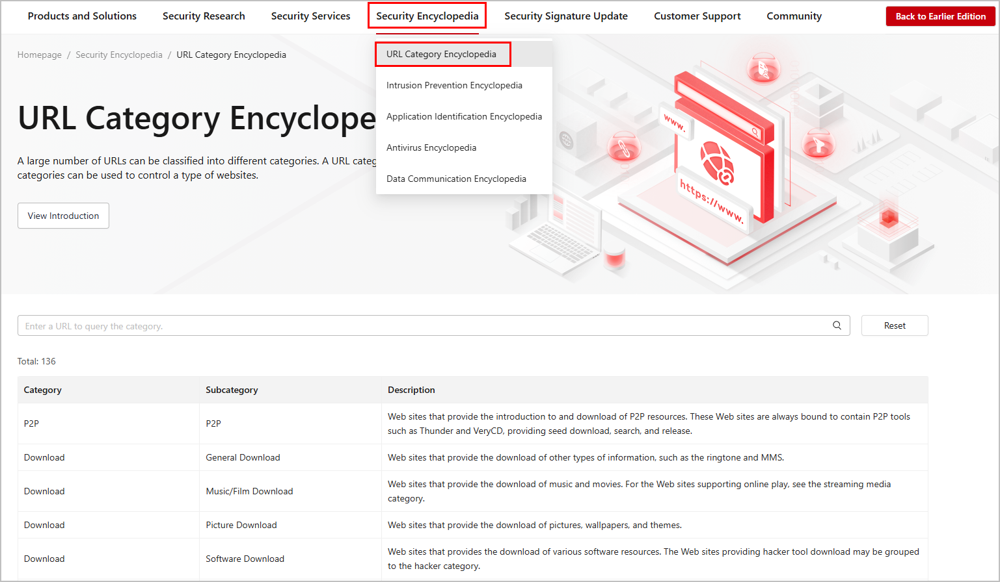

Before configuring the control actions for URL categories, you can query the category to which URLs belong on the Huawei Intelligent Security Center.
The remote query service provides a larger number of URL categories than is available in the predefined URL category database. You can configure this service so that the device can perform remote query if users attempt to access URLs that do not match those in the local database.
Log in to the Huawei Intelligent Security Center (isecurity.huawei.com), and choose . Enter a URL in the search text box and click Query to view URL category information.
